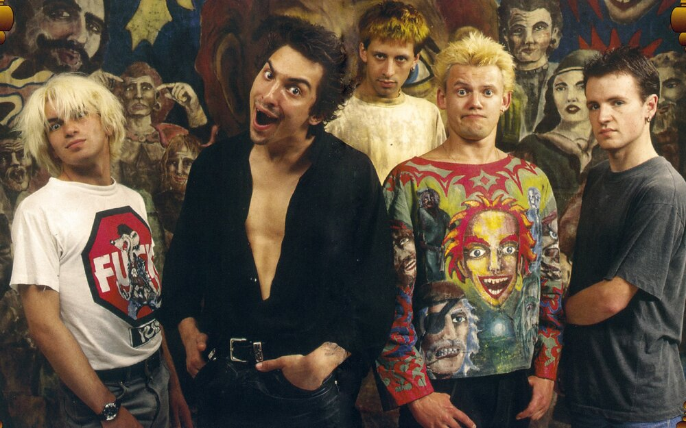
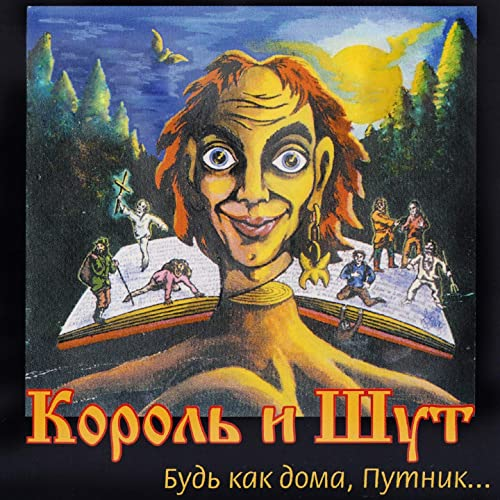
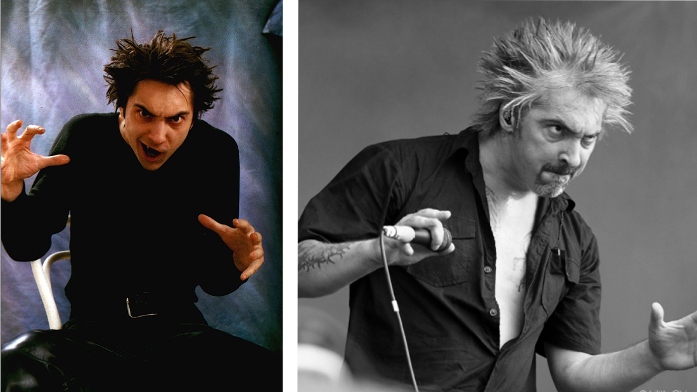

Король и Шут
Всем панкрок, господа! Тут уже не про русскую тоску, но всё равно это нечто нам близкое. Сказки пытаются нам рассказать эти люди. Хотя, даже в этих сказках очень заметно вдохновение авторов рассказами и сказками западных писателей.
Итак, я думаю представления эта легендарная группа не требует... Поэтому перейдём сразу к некорорым подробностям. Во-первых, называть группу кратко — КиШ — я не буду, ибо это не нравилось самим создателям, а я прекрасно понимаю, каково это, когда ты не хочешь олицетворять своё творчество с тем, что тебе не близко. Поэтому, так сказать, буду соблюдать традицию уважения к создателям.
Наверное, их самая известная песня
Не сказать, что я знаю все подробности о группе, но некоторые интересные вещи могу поведать.
Начну, наверное, не с главного фронтмена этой группы, но точно с того человека, без которого бы не было многих песен, и, в некотором смысле оформления группы.
Андрей Князев, или как его называли — Князь — второй фронтмен и вокалист в группе. Поступив в реставрационное училилще, познакомился с Горшеневым, у которого на тот момент уже была группа — "Контора". Присоединился Князев к ней после того, как показал Мише свои черновики с различными историями и иллюстрациями.
Имел в группе большой вес, так как не только пел, но и
